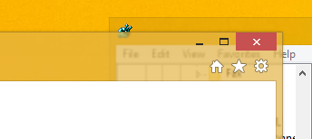
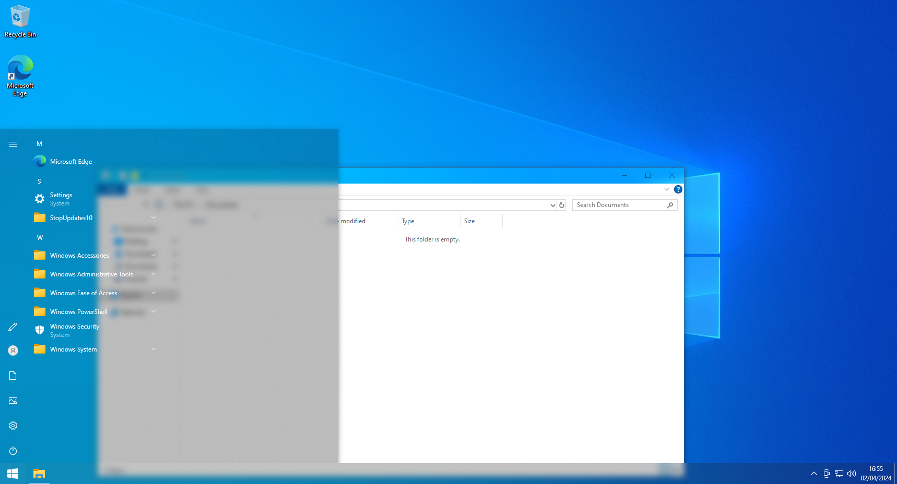
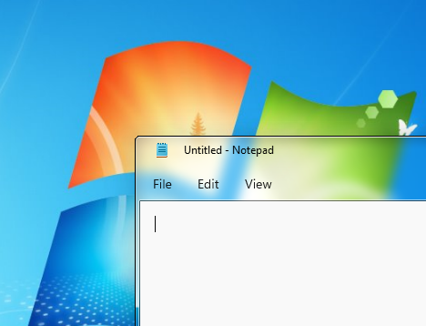

Glass lookYour windows will be rendered with transparent borders. This look allows you to see what is behind the border. The key element is the blurring of content behind the glass borders to prevent it from being too clear and disturbing. The result is very smart window border! |

|
Fully nativeNo custom skinning engine used. Due to the native nature of this utility your Windows theme is composited together with the glass effect. All features controlled through DWM API (e.g. DwmEnableBlurBehindWindow or DwmExtendFrameIntoClientArea) are supported including the taskbar or custom Start menu blur effect.Icons, buttons, text boxes, Start menu, taskbar, and most other components will all match the theme selected. No more overlay update failures, app incompatibilities, or out of date operating systems involved. |

|
|

|
Low resources usage!This library tries to utilize all DWM resources as much as possible to minimize RAM and VRAM usage. No redudant objects are created, no background overlay is running. The result is light-weight library which behaves exactly in the same way as Aero Glass in Windows 7 did. No performance degradation! |
Theme your windows!You can change the look of your windows borders completely with a custom Windows theme, without patching uxtheme. This allows you to bring back several effects such as window shadow, caption glow effect, rounded borders or simply change the appearence of caption buttons. You just modify resources in your favourite styles editor and everything will look as you want! |